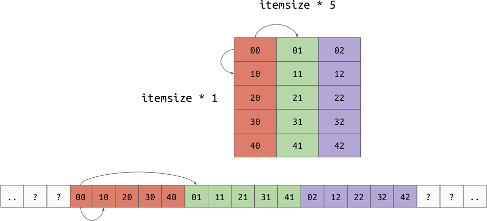

Numpy Overview¶
Python allocates every object in the heap and only refers to them through a pointer, requiring that we do at least one memory dereference to access the value at all. Python also requires many dereferences to perform even simple operations like addition or multiplication. Both of these things are a massive drain on performance, so why does Python get used in performance sensitive fields like numerical computing?
This is the paradox that we have to work with when we’re doing scientific or numerically-intensive Python. What makes Python fast for development – this high-level, interpreted, and dynamically-typed aspect of the language – is exactly what makes it slow for code execution.
Jake VanderPlas, Losing Your Loops: Fast Numerical Computing with NumPy, PyCon 2015
Numpy is a Python library which is built around a single core data structure,
the ndarray, short for N dimensional array. This single data structure is
what allows Python to be as fast or faster than other languages for doing
numeric computing, even with all of the other downsides Python has.
ndarray¶
An ndarray is composed of the following parts:
dtype- shape
- memory buffer
- strides
dtype¶
The dtype, short for “data type” is an object which represents
the types of the elements to store in the array. For example,
np.dtype('int32') represent 32 bit (4 byte) integers. Unlike a Python list,
all elements of an ndarray must be the same type.
Shape¶
The shape is small array which represents the number of values along each axis. For example:
(10,): 1-dimensional array of length 1(5, 3): 2-dimensional array with 5 rows and 3 columns(2, 4, 6): 3-dimensional array(): the empty sequence represents a scalar value, this comes up every so often but is not normally explicitly stated.
Axes are named by their index in the shape. For 2-dimensional arrays, axis 0 means rows and axis 1 means columns.
Memory Buffer and Strides¶
The memory buffer is a low-level array which holds the actual values for the array. This is deeply tied to the strides, which is an array representing the number of bytes needed to move one step along each axis. This is a generalization of the “row order” and “column order” layouts discussed earlier. It is possible to implement both row and column major orders by changing your data and strides. For example:
Row Order:

Column Order:
The strides allow us to represent another very important concept, “strided views”. Imagine we have a 2d array in row major order, but we want to take a view over a particular column. By shifting the base pointer and playing with the strides, it is possible to create an array which produces the value for each column but doesn’t need to copy the data.

Operations¶
Just storing data efficiently is not that exciting by itself. What makes numpy
very powerful is that it gives efficient operations that act on the
array. Because the data in an ndarray is both homogeneously typed
and stored in a (usually) contiguous buffer, numpy can implement operations in a
lower level language which optimize for memory access, cache utilization, and
instruction count.
Python features like iterators or sum helped optimize our loop because we
could reduce the number of times we asked objects “how do you retrieve an
element at an index?”. Because ndarray objects hold
homogeneously typed elements, we can ask “how do you do X operation with the
given inputs” exactly once for the entire array. At this point, we can decide if
the operation is valid and if it is, execute an optimized loop to perform that
operation given the operands.
For example, let’s look at “sum”. When summing a Python list of Python integers,
we need to ask every into how to add itself to another int. At every step we
need to re-check the operands and find the proper implementation of “add”. Also,
we will need to allocate a new integer object for every
intermediate sum. Using an ndarray, we already know up front
that the elements are all the same type. If we try to sum, we would check once,
“can elements of this dtype be added together?”. If they can, it would find the
optimized implementation of “add” for the dtype once. Then it would jump into
the loop and start performing the sum. Because numpy doesn’t need to keep all of
it’s state with Python objects, it can re-use the memory storing the
intermediate sum which further removes allocations.
To show that this really adds up, let’s compare a Python dot product with numpy’s implementation of dot product:
In [2]: xs = [random.random() for _ in range(1000)]
In [3]: ys = [random.random() for _ in range(10000)]
In [4]: %timeit pythonic_dot(xs, ys)
552 µs ± 8.65 µs per loop (mean ± std. dev. of 7 runs, 1000 loops each)
In [1]: import numpy as np
In [2]: xs = np.random.random(10000)
In [3]: xs.dtype
Out[3]: dtype('float64')
In [4]: xs.shape
Out[4]: (10000,)
In [5]: xs.strides
Out[5]: (8,)
In [6]: ys = np.random.random(10000)
In [7]: %timeit np.dot(xs, ys)
2.45 µs ± 16.5 ns per loop (mean ± std. dev. of 7 runs, 100000 loops each)
Note
These are both \(O(n)\) implementations.
Broadcasting¶
Not only is numpy efficient, it is pleasant to use. One of the most pleasant
features of numpy is called “broadcasting”. Broadcasting happens when you want
to perform a function with 2 or more arguments. A function here could also be an
operator like + or *. Broadcasting is a set of rules that allow us to
align two array-like inputs so that we can formally define the operation. The
steps for broadcasting are:
- Align the shape of the two elements by left-extending with 1.
- Compare the shapes axis by axis, if they are not equal, one side must be 1, otherwise the shapes are not compatible.
- Convert any value equal to 1 in the shape to the max value on that dimension by repeating along that axis. At this point, the arrays will be the same shape.
- Apply the scalar function element-wise.
Note
Remember that the shape of a scalar is ().
Examples¶
np.array([1, 2, 3]) + 10¶
let lhs = np.array([1, 2, 3])
let rhs = 10
lhs.shape == (3,), rhs.shape == ()
- Left extend the shape of
rhswith 1, giving usrhs.shape = (1,)andrhs = np.array([10]). - Compare the shapes,
3 != 1; however, one of the values is 1. - Convert the
1in the rhs shape to3by repeating along the axis. Nowrhs = np.array([10, 10, 10]). - Apply the scalar function element-wise:
[1 + 10, 2 + 10, 3 + 10]
Result: np.array([11, 12, 13])
np.array([1, 2, 3]) * np.array([2, 3, 4])¶
let lhs = np.array([1, 2, 3])
let rhs = np.array([2, 3, 4])
lhs.shape == (3,), rhs.shape == (3,)
- The shapes are already aligned.
- The shapes are equal.
- There are no
1values in the shape. - Apply the scalar function element-wise:
[1 * 2, 2 * 3, 3 * 4]
Result: np.array([ 2, 6, 12])
np.array([1, 2, 3]) / np.array([2, 4])¶
let lhs = np.array([1, 2, 3])
let rhs = np.array([2, 4])
lhs.shape == (3,), rhs.shape == (2,)
- The shapes are already aligned.
- Along axis 0,
3 != 2. Neither3nor2is equal to1. This means the shapes are not compatible.
Result: Exception, these shapes are not compatible.
np.array([2, 3, 4]) ** np.array([[1 / 2], [1 / 3]])¶
let lhs = np.array([2, 3, 4])
let rhs = np.array([[1 / 2], [1 / 3]])
lhs.shape == (3,), rhs.shape == (2, 1)
Align the shapes by left extending the
lhswith 1:lhs.shape == (1, 3).Compare the shapes,
1 != 2but there is a one.3 != 1but there is a one.Convert the
1values to the maximum value along that axis. This gives us:lhs.shape == (2, 3)andrhs.shape == (2, 3).Apply the function element-wise:
[[2 ** (1 / 2)], [3 ** (1 / 2)], [4 ** (1 / 2)], [2 ** (1 / 3)], [3 ** (1 / 3)], [4 ** (1 / 3)]]
Result:
array([[1.41421356, 1.73205081, 2. ],
[1.25992105, 1.44224957, 1.58740105]])
Note
This algorithm is just an abstract representation of how alignment happens. In practice, numpy does not materialize the extended and aligned arrays, it just acts with the input data as is and plays tricks with the indexing. This is to reduce the number of allocations and copies improving performance.